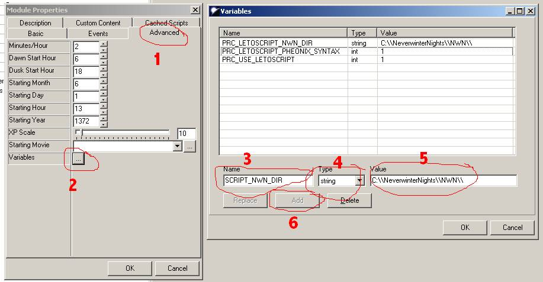
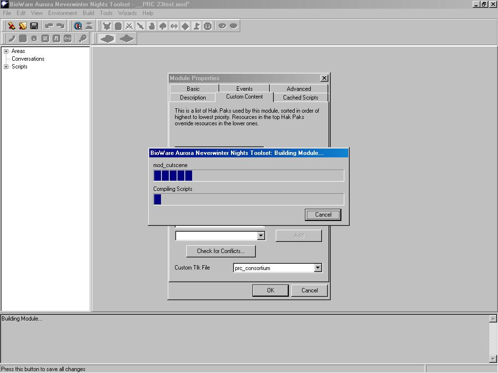

ACP is the Alternate Combat animations Pack by Ragnarok of DLA. It is avaliable on the NWvault
here.
- Extract the ACP haks to your NWN hak dir.
- Open the toolset.
- Load the module you wish to add ACP to. It should already have PRC 2.3 installed via the PRC module updater. You should not have run the module updater to install the ACP on it.
- You should get a dialog box that says: "Warning: This file uses one or more haks". Press Yes.
- Edit -> Module Properties -> Advanced tab -> Variables.
You should see a screen like this:

- In the name box, enter "PRC_ACP_MANUAL"
- In the type box, select int
- In the value box, enter "1"
- Press Add. It should be added to the list above.
- Press OK.
If you want to save the module at this point, you can do so. If
your having trouble canceling the build, this may be a good idea at
this point.
- Select the Custom Content tab in Module Properties
- From the drop down menu, select "acp_core". Press Add.
- From the drop down menu, select "acp_kensai". Press Add.
- From the drop down menu, select "acp_assassin". Press Add.
- From the drop down menu, select "acp_heavy". Press Add.
- From the drop down menu, select "acp_fencing". Press Add.
- From the drop down menu, select "acp_pheno5_hr". Press Add.
- From the drop down menu, select "acp_pheno6_hr". Press Add.
- From the drop down menu, select "acp_pheno7_hr". Press Add.
- From the drop down menu, select "acp_pheno8_hr". Press Add.
- Make sure you do not add the "acp_2da" hak as it is already integrated into the PRC.
- You will get a warning message. Press Yes.
- It will now start compiling. As soon as the Cancel button
becomes clickable, click on it. This picture should help, this is the
sort of thing you should see when you should click the cancel button:

Don't worry if you miss it a few times or it takes a while to
appear. It does depend on the speed of your maching and the size of the
module your adding it to.
- File -> Save As.. and enter a new name
- Start up NWN and Start a New Game and select the module you
just created. You will see the ACP feat on your class radials and can
use it to change combat animations.
Note I: If you want to have PCs automatically change animation
based on class/equipment rather than having to tell it to do so, enter
PRC_ACP_AUTOMATIC instead of PRC_ACP_MANUAL in the module variable
name.
Note II: If you want NPCs using the PRC NPC script wrappers to
change animations, set the PRC_ACP_NPC_AUTOMATIC variable either on the
module or on specific NPCs.